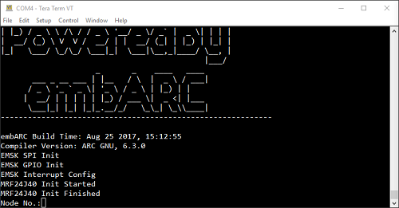
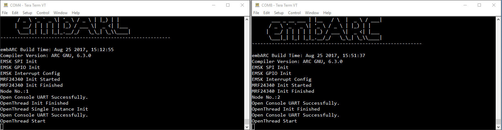
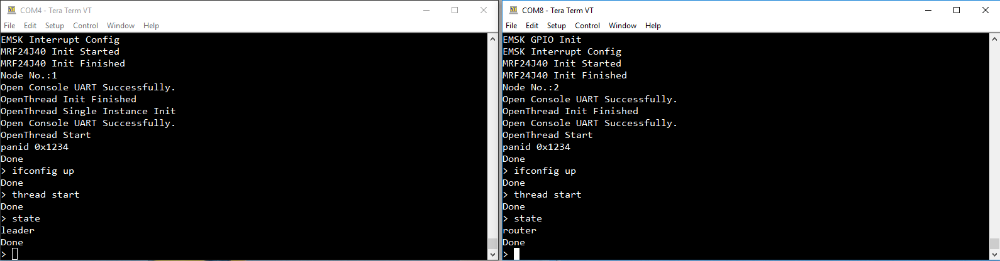
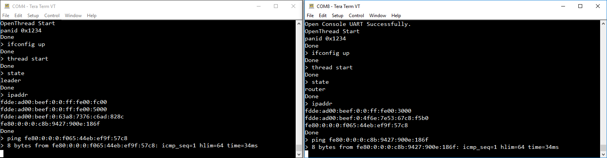

OpenThread CLI Example¶
This application is designed to show how to use the OpenThread Command Line Interface (CLI) example in embARC.
Hardware and Software Setup¶
Required Hardware¶
2 x <a href=”https://www.synopsys.com/dw/ipdir.php?ds=arc_em_starter_kit” title=”DesignWare ARC EM Starter Kit(EMSK)”>DesignWare ARC EM Starter Kit(EMSK)</a>, recommended version 2.3
2 x <a href=”http://store.digilentinc.com/pmod-rf2-ieee-802-15-rf-transceiver/” title=”Digilent Pmod RF2”>Digilent Pmod RF2</a>`
1 x SD card
Required Software¶
Metaware or ARC GNU Toolset
Serial port terminal, such as putty, tera-term or minicom
User Manual¶
Running OpenThread in self-boot mode¶
Two EMSKs will be used as two Thread nodes. They are set automatically by OpenThread stack. The following example is to run the OpenThread CLI in the EMSK self-boot mode with using SD card.
The Digilent PmodRF2 and the self-made MRF24J40 module are both supported.
Use AC adapter to ensure a steady power supply.
Open two Tera Term emulators to connect EMSKs with different COM ports.
The self-boot mode preparation is included in the following steps.
make run is not supported because both EMSK board is v2.3 and it will lead to conflict.
Building and running OpenThread example¶
Program the secondary bootloader application into onboard SPI Flash.
Go to
\embARC\example\baremetal\bootloaderin command line.Enter make TOOLCHAIN=gnu BD_VER=23 CUR_CORE=arcem7d bin
Select configuration 1 on the EMSK for ARCEM7D by setting all DIP switches to the OFF position.
Insert the SD card to your PC, and copy the binary file
obj_emsk_23/gnu_arcem7d/emsk_bootloader_gnu_arcem7d.binto the SD Card root directory. Rename it toem7d_2bt.binas the secondary bootloader.The bootloader has been modified in embARC. Please perform the following steps to update the bootloader in the EMSK SPI flash.
Update the bootloader in both EMSK boards. The other EMSK board should be updated by performing the same steps.
Connect one EMSK board to the host with USB. Insert the SD Card into the EMSK board SD Card slot.
Go to
\embARC\example\freertos\net\ntshellin command line. Enter make TOOLCHAIN=gnu BD_VER=23 CUR_CORE=arcem7d. Once the application builds successfully, enter make TOOLCHAIN=gnu BD_VER=23 CUR_CORE=arcem7d run in command line to start NT-Shell.
Use NT-Shell command spirw in the terminal window to write the
em7d_2bt.binto SPI flash.run spirw -h to show help.
run spirw -w em7d_2bt.bin 0x17f00000 0x17f00004 to program SPI flash.
Check the output message to see if it is programmed successfully. The process may take some time. If
WF INIT FAILEDandMRF24G Init Failedis shown in the Tera Term, there is no error since the WiFi module has not been used here.
Generate
boot.binof the OpenThread CLI example.Go to
\embARC\example\baremetal\openthread\cliin command line.Enter make TOOLCHAIN=gnu BD_VER=23 CUR_CORE=arcem7d bin.
Insert SD Card to PC. Copy the generated binary file
obj_emsk_23/gnu_arcem7d/openthread_gnu_arcem7d.binto SD card root. And rename it toboot.bin. Note that the secondary bootloader can only identifyboot.binin the SD card root.
Run OpenThread CLI example. Before resetting the EMSK boards, make sure Bit 4 of the onboard DIP switch is ON to enable secondary bootloader to run.
Insert SD Card back to one EMSK. Press the reset button to reboot it. Wait for loading boot.bin from SD card. The response in the terminal window is shown as below.
Get SD card from one EMSK and insert it to the other EMSK. Press the reset button to reboot it. Wait for loading boot.bin from SD card.
Enter 1 and press Enter button in one Tera Term. Enter 2 and press Enter button in the other one. Enter the number here to generate pseudo random number for OpenThread. Recommend to enter numbers in order, such as 1, 2 and 3. Using same number in different nodes may lead error. The number will not be shown directly in the Tera Term until pressing Enter button from the keyboard.
Enter the following commands in the two Tera Term windows.
panid 0x1234
ifconfig up
thread start
Wait 20 seconds for completing Thread configuration. Enter “state” to see the state of the node, one leader and one router.

Enter ipaddr to show the IP address of the Thread node. Then enter ping [IP address], such as ping fdde:ad00:beef:0:0:ff:fe00:ec00.
The IP addresses may not be the same in different tests, even using the same node number, program and EMSK board.
ICMP protocol is implemented in OpenThread for ping command.
This example demonstrates a minimal OpenThread application to show the OpenThread configuration and management interfaces via a basic command-line interface. The example result is the same as the one in the Posix simulation in Linux.
See the OpenThread CLI reference
OT_CLI.mdfor more details.For example, the following response can be shown for the EMSK node 1 (COM4) and EMSK node 2 (COM8).
> state leader > ipaddr fdde:ad00:beef:0:0:ff:fe00:fc00 fdde:ad00:beef:0:0:ff:fe00:d400 fdde:ad00:beef:0:63a8:7376:c6ad:828c fe80:0:0:0:c8b:9427:900e:186f > ping fe80:0:0:0:f065:44eb:ef9f:57c8
> state router > ipaddr fdde:ad00:beef:0:0:ff:fe00:fc00 fdde:ad00:beef:0:0:ff:fe00:6800 fdde:ad00:beef:0:4f6e:7e53:67c8:f5b0 fe80:0:0:0:f065:44eb:ef9f:57c8 > ping fe80:0:0:0:c8b:9427:900e:186f

{kind=link}
{kind=link}
{kind=link}
{kind=link}
{kind=link}